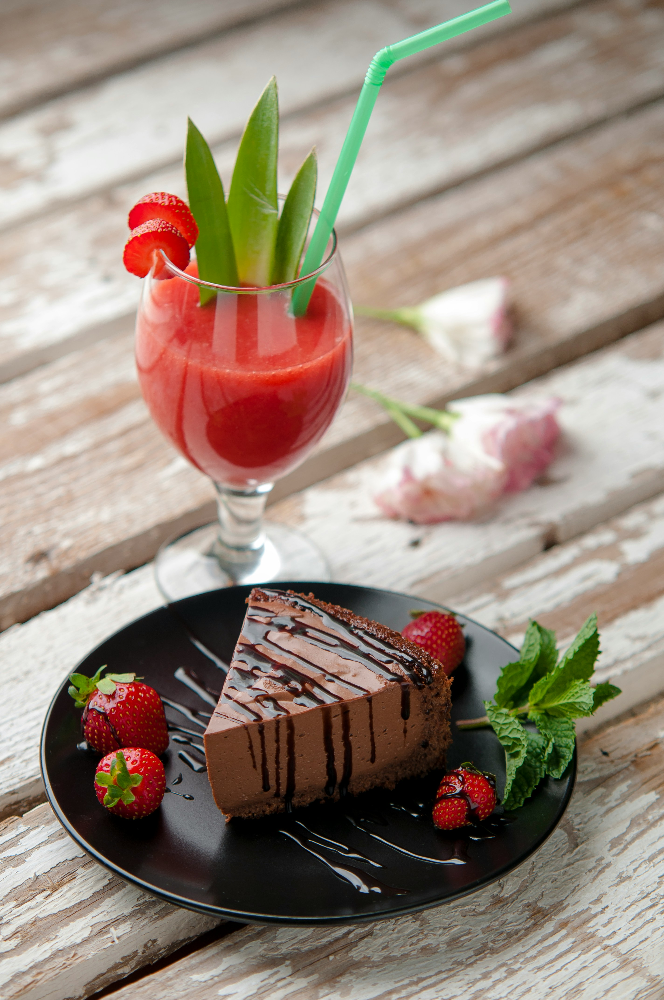

A melhor torta holandesa e mais facíl de todas!!

Ingredientes (10 porções)
Massa
- 150g de biscoito de maisena
- 100 g de manteiga sem sal
Recheio
- 1 xícara de açúcar refinado
- 1 colher (chá) de essência de baunilha
- 200 g de manteiga sem sal
- 500 ml de creme de leite gelado
Cobertura
- 170 g de chocolate meio amargo derretido
- 200 g de creme de leite
Montagem
- 1 pacote de biscoito calipso
Modo de preparo
Massa
- Triture o biscoito no processador e misture com a manteiga, formando uma farofinha.
- Forre uma forma de aro removível com a farofinha, pressionando bem.
- Pré-asse a massa (180° C), por cerca de 10 minutos.
- Retira a massa do forno e espere esfriar.
Recheio
- Na batedeira, misture o açucar com a manteiga até fica homogêneo.
- Adicione o creme de leite e a essência de baunilha e volte a bater.
Cobertura
- Misture o chocolate meio amargo derretido com o creme de leite até obter uma consistência homogênea.
Montagem
- Depois de preaquecer a massa e deixar esfriar, coloque os biscoitos redondos ao redor da forma.
- Adicione o recheio e leve à geladeira por 4 horas.
- Retire da geladeira e despeje a cobertura por cima.
- Volte à geladeira por mais 6 horas.